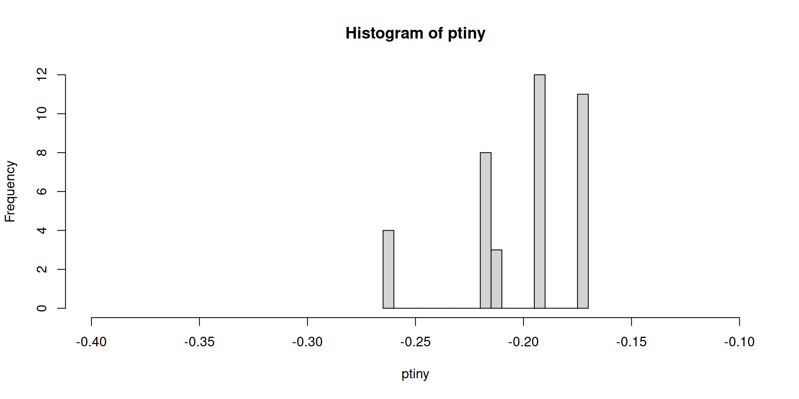
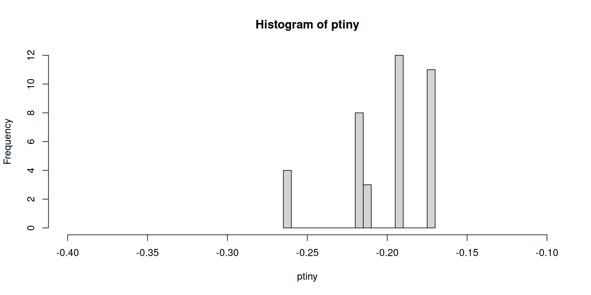
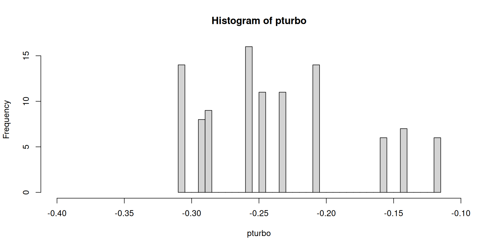
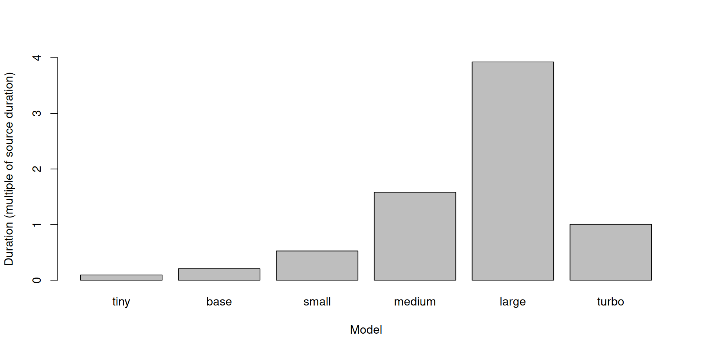

LISER
Whisper is a transcribing/translating model created by OpenAI.
Whisper can:
As a researcher the beauty is that you do all the processing on your local machine. There’s no concern for data privacy.
Processing is relatively fast (more on that later).
There are instructions.
Using Whisper is fairly easy, the installation may be more difficult.
I had to use a Virtual Environment (VE) on linux to install the Python dependencies separately.
Working with Python used to get messy and broken when you installed python packages with both apt and pip.
Now in Ubuntu/Mint you get an error message when trying to install a package with pip saying error: externally-managed-environment (It’s managed by apt only now).
This is to protect you. However, now when you are following instructions online on installing a package that use pip, you’re stuck. Enter virtual environments.
There are various types of virtual environments - here we’ll use Python’s venv.
A virtual environment is a way of managing the environment settings and dependencies for a specific program, the context if you will, rather than changing your machine’s overall configuration.
Create:
$ python -m venv venv_nameThe settings/dependencies/libraries will be stored in the venv_name.
Load/activate the virtual environment:
$ . ./venv_name/bin/activateor:
$ source venv_name/bin/activateYou should see a change in your shell name (to the left of your $).
Sanity check, try the following:
(venve_name) $ which python3Should show something like:
/home/username/.. ../venv_name/bin/python3Not:
/usr/bin/python3Now that it’s active you can update pip:
(venv_name) $ pip install --upgrade pipAnd then install any other pip packages you would like!
You can now work without worrying about package installations messing with your other projects!
To leave the virtual environment just use deactivate:
(venv_name) $ deactivateThere’s instructions, but simply:
(venv_name) $ whisper carl_sagan.mp3 --model tiny.enOr, with some common options:
(venv_name) $ whisper --output_dir [dirname] carl_sagan.mp3 --language English --model [size]
We are using an audio clip spoken by Carl Sagan, describing the pale blue dot within the golden sunbeam.
This means Whisper can also be great at generating subtitles in native format with no additional effort!
A comparison of reported probabilities per line in two models.

Lowest probability (confidence?) line:
[1] " off suns. But precisely because of the obscurity of our world, the revealed, such a picture"
Lowest probability (confidence?) line:
[1] " In our obscurity,"Source audio of Carl Sagan speaking lasts 4m35s.

real user sys
tiny 25.938 91.610 3.187
base 56.470 210.876 4.997
small 144.491 554.754 9.013
medium 434.955 1694.648 19.601
large 1079.168 3586.586 681.372
turbo 276.343 992.411 79.427Let’s look at whether the lines match: diff -y –suppress-common-lines [model1]/carl_sagan.txt [model2]/carl_sagan.txt | wc -l
model tiny base small medium large turbo
tiny NA 38 39 38 86 102
base NA NA 26 27 82 101
small NA NA NA 24 78 95
medium NA NA NA NA 81 93
large NA NA NA NA NA 61
turbo NA NA NA NA NA NAThe voyages were guaranteed to work only until the Saturn encounter.
I thought it might be a good idea just after Saturn to have them take one last glance
homeward. From Saturn I knew, the earth would appear too small for Voyager to make
The voyages were guaranteed to work only until the Saturn encounter.
I thought it might be a good idea just after Saturn to have them take one last glance homeward.
From Saturn I knew the Earth would appear too small for Voyager to make out any detail.
The voyagers were guaranteed to work only until the Saturn encounter.
I thought it might be a good idea, just after Saturn, to have them take one last glance homeward.
From Saturn, I knew, the Earth would appear too small for voyager to make out any detail.
The Voyagers were guaranteed to work only until the Saturn encounter.
I thought it might be a good idea, just after Saturn, to have them take one last glance homeward.
From Saturn, I knew, the Earth would appear too small for Voyager to make out any detail.
The Voyagers were guaranteed to work only until the Saturn encounter.
I thought it might be a good idea, just after Saturn,
to have them take one last glance homeward.
The Voyagers were guaranteed to work only until the Saturn encounter.
I thought it might be a good idea, just after Saturn, to have them take one last glance homeward.
From Saturn, I knew, the Earth would appear too small for Voyager to make out any detail.
[1] "start end text"
[2] "0 5000 The voyages were guaranteed to work only until the Saturn encounter."
[3] "5000 9760 I thought it might be a good idea just after Saturn to have them take one last glance"
[4] "9760 14920 homeward. From Saturn I knew, the earth would appear too small for Voyager to make"
[5] "14920 21120 out any detail. Our planet would be just a point of light, a lonely pixel. Hardly"
[6] "21120 26800 distinguishable from the many other points of light Voyager would see nearby planets far"
[7] "26800 33520 off suns. But precisely because of the obscurity of our world, the revealed, such a picture"
[8] "33520 38400 might be we're having. While almost everyone has taught that the earth is a sphere, with"
[9] "38400 44640 all of us somehow glued to it by gravity, the reality of our circumstance did not really"
[10] "44640 52240 begin to sink in until the famous, frame-filling Apollo photograph of the whole earth."
[11] "52240 58480 The one taken by the Apollo 17 astronauts on the last journey of humans to the moon."
[12] "58480 62720 It seemed to me that another picture of the earth, this one taken from a hundred thousand"
[13] "62720 69240 times farther away, might help in the continuing process of revealing to ourselves our true"
[14] "69240 75360 circumstance and condition. It had been well understood by the scientists and philosophers"
[15] "75440 82080 of classical antiquity that the earth was a mere point in a vast encompassing cosmos."
[16] "83120 90160 But no one had ever seen it as such. Consider again that dot. That's here. That's home."
[17] "90960 99120 That's us. On it, everyone you love, everyone you know, everyone you ever heard of,"
[18] "99200 106160 every human being who ever was, lived out their lives. The aggregate or joy and suffering,"
[19] "107520 111200 thousands of confident religions, ideologies and economic doctrines,"
[20] "112160 118160 every hunter and forager, every hero and coward, every creator and destroyer of civilization,"
[21] "119280 124400 every king and peasant, every young couple in love, every mother and father,"
[22] "124880 131920 hopeful child, inventor and explorer, every teacher of morals, every corrupt politician,"
[23] "131920 138800 every superstar, every supreme leader, every saint and sinner in the history of our species,"
[24] "139600 149120 lived there on the mode of dust suspended in a sunbeam. The earth is a very small stage"
[25] "149920 159200 in a vast cosmic arena. Think of the rivers of blood spilled by all those generals and emperors"
[26] "160320 167040 so that in glory and triumph they could become the momentary masters of a fraction of a dot."
[27] "168640 173840 Think of the endless coolties visited by the inhabitants of one corner of this pixel"
[28] "174560 181440 on the scarcely distinguishable inhabitants of some other corner, how frequent their misunderstandings,"
[29] "182080 189840 how eager they are to kill one another, how fervent their hatred. Our posturings,"
[30] "190720 196560 our imagined self-importance, the delusion that we have some privilege to position in the universe,"
[31] "197360 206640 are challenged by this point of pale light. Our planet is a lonely spec in the greet,"
[32] "206640 216320 enveloping cosmic dark. In our obscurity, in all this vastness, there is no hint that"
[33] "216320 223760 help become from elsewhere to save us from ourselves. The earth is the only world known so far"
[34] "223840 229840 to harbor life. There is nowhere else, at least in the near future, to which our species could"
[35] "229840 240800 migrate. Visit? Yes. Settle. Not yet. Like it or not, for the moment, the earth is where we"
[36] "240800 247280 make our stand. It has been said that astronomy is humbling and character building experience."
[37] "248400 253680 There is perhaps no better demonstration of the folly of human conceits than this distant"
[38] "253760 261920 image of our tiny world. To me, it underscores our responsibility to deal more kindly with one"
[39] "261920 269600 another and to preserve and cherish the pale blue dot. The only home we've ever known." [1] "start end text"
[2] "1000 5000 The voyagers were guaranteed to work only until the Saturn encounter."
[3] "5000 10000 I thought it might be a good idea, just after Saturn, to have them take one last glance homeward."
[4] "10000 16000 From Saturn, I knew, the Earth would appear too small for voyager to make out any detail."
[5] "16000 20000 Our planet would be just a point of light, a lonely pixel."
[6] "20000 28000 Hardly distinguishable from the many other points of light voyager would see, nearby planets, far off suns."
[7] "28000 35000 But precisely because of the obscurity of our world thus revealed, such a picture might be worth having."
[8] "35000 42000 While almost everyone is taught that the Earth is a sphere, with all of us somehow glued to it by gravity,"
[9] "42000 52000 the reality of our circumstance did not really begin to sink in until the famous, frame-filling Apollo photograph of the whole Earth,"
[10] "52000 58000 the one taken by the Apollo 17 astronauts on the last journey of humans to the Moon."
[11] "58000 64000 It seemed to me that another picture of the Earth, this one taken from a hundred thousand times farther away,"
[12] "64000 72000 might help in the continuing process of revealing to ourselves our true circumstance and condition."
[13] "72000 77000 It had been well understood by the scientists and philosophers of classical antiquity,"
[14] "77000 83000 that the Earth was a mere point in a vast, encompassing cosmos."
[15] "83000 86000 But no one had ever seen it as such."
[16] "86000 88000 Consider again that dot."
[17] "88000 93000 That's here, that's home, that's us."
[18] "93000 99000 On it, everyone you love, everyone you know, everyone you ever heard of,"
[19] "99000 104000 every human being, whoever was, lived out their lives."
[20] "104000 112000 The aggregate of our joy and suffering, thousands of confident religions, ideologies and economic doctrines,"
[21] "112000 119000 every hunter and forager, every hero and coward, every creator and destroyer of civilization,"
[22] "119000 125000 every king and peasant, every young couple in love, every mother and father,"
[23] "125000 132000 every hopeful child, inventor and explorer, every teacher of morals, every corrupt politician,"
[24] "132000 139000 every superstar, every supreme leader, every saint and sinner in the history of our species,"
[25] "139000 146000 lived there, on the mode of dust, suspended in a sunbeam."
[26] "146000 154000 The Earth is a very small stage in a vast cosmic arena."
[27] "154000 160000 Think of the rivers of blood spilled by all those generals and emperors,"
[28] "160000 168000 so that in glory and triumph they could become the momentary masters of a fraction of a dot."
[29] "168000 174000 Think of the endless cruelties visited by the inhabitants of one corner of this pixel,"
[30] "174000 179000 on the scarcely distinguishable inhabitants of some other corner,"
[31] "179000 184000 how frequent their misunderstandings, how eager they are to kill one another,"
[32] "184000 188000 how fervent their hatreds."
[33] "188000 197000 Our posturings, our imagined self-importance, the delusion that we have some privileged position in the universe,"
[34] "197000 201000 are challenged by this point of pale light."
[35] "201000 209000 Our planet is a lonely speck in the great enveloping cosmic dark."
[36] "209000 221000 In our obscurity, in all this vastness, there is no hint that help will come from elsewhere to save us from ourselves."
[37] "221000 225000 The Earth is the only world known so far to harbor life."
[38] "225000 231000 There is nowhere else, at least in the near future, to which our species could migrate."
[39] "231000 237000 Visit? Yes. Settle. Not yet."
[40] "237000 243000 Like it or not, for the moment, the Earth is where we make our stand."
[41] "243000 248000 It has been said that astronomy is a humbling and character-building experience."
[42] "248000 257000 There is perhaps no better demonstration of the folly of human conceits than this distant image of our tiny world."
[43] "257000 263000 To me, it underscores our responsibility to deal more kindly with one another"
[44] "263000 271000 and to preserve and cherish the pale blue dot, the only home we've ever known." [1] "start end text"
[2] "900 4640 The Voyagers were guaranteed to work only until the Saturn encounter."
[3] "5540 7660 I thought it might be a good idea, just after Saturn,"
[4] "7940 10200 to have them take one last glance homeward."
[5] "10960 14020 From Saturn, I knew, the Earth would appear too small"
[6] "14020 15820 for Voyager to make out any detail."
[7] "16460 19900 Our planet would be just a point of light, a lonely pixel,"
[8] "20760 23040 hardly distinguishable from the many other points of light"
[9] "23040 27580 Voyager would see, nearby planets, far-off suns."
[10] "27580 32260 But precisely because of the obscurity of our world thus revealed,"
[11] "32900 34460 such a picture might be worth having."
[12] "35460 37780 While almost everyone is taught that the Earth is a sphere,"
[13] "38240 40960 with all of us somehow glued to it by gravity,"
[14] "41700 45740 the reality of our circumstance did not really begin to sink in"
[15] "45740 51340 until the famous frame-filling Apollo photograph of the whole Earth,"
[16] "52120 54260 the one taken by the Apollo 17 astronauts"
[17] "54260 56940 on the last journey of humans to the Moon."
[18] "58300 60200 It seemed to me that another picture of the Earth,"
[19] "60500 63880 this one taken from a hundred thousand times farther away,"
[20] "64440 68100 might help in the continuing process of revealing to ourselves"
[21] "68100 71140 our true circumstance and condition."
[22] "72200 75180 It had been well understood by the scientists and philosophers"
[23] "75180 78720 of classical antiquity that the Earth was a mere point"
[24] "78720 82140 in a vast, encompassing cosmos."
[25] "82820 84860 But no one had ever seen it as such."
[26] "85900 87060 Consider again that dot."
[27] "87920 88880 That's here."
[28] "89440 90220 That's home."
[29] "90980 91640 That's us."
[30] "92720 96680 On it, everyone you love, everyone you know,"
[31] "97560 101140 everyone you ever heard of, every human being who ever was,"
[32] "101900 102880 lived out their lives."
[33] "103660 106220 The aggregate of our joy and suffering,"
[34] "107580 111280 thousands of confident religions, ideologies, and economic doctrines,"
[35] "112220 115860 every hunter and forager, every hero and coward,"
[36] "115860 117500 every creator and destroyer,"
[37] "117500 118180 every leader of civilization,"
[38] "118820 120520 every king and peasant,"
[39] "121400 122720 every young couple in love,"
[40] "123260 124340 every mother and father,"
[41] "124900 125800 hopeful child,"
[42] "126460 127900 inventor and explorer,"
[43] "128700 130120 every teacher of morals,"
[44] "130280 131400 every corrupt politician,"
[45] "132060 133320 every superstar,"
[46] "133880 135520 every supreme leader,"
[47] "136080 138920 every saint and sinner in the history of our species,"
[48] "139600 140200 lived there,"
[49] "141040 142120 on a moat of dust,"
[50] "142860 144920 suspended in a sunbeam."
[51] "145720 147480 The Earth is a very, very small,"
[52] "147480 153480 very small stage in a vast, cosmic arena."
[53] "153480 160540 Think of the rivers of blood spilled by all those generals and emperors,"
[54] "160540 168980 so that in glory and triumph they could become the momentary masters of a fraction of a dot."
[55] "168980 174760 Think of the endless cruelties visited by the inhabitants of one corner of this pixel,"
[56] "174760 176920 on the scarcely distinguishable inhabitants,"
[57] "176920 177420 on the few, the few, the few, the few, the few, the few."
[58] "177420 178560 Of some other corner,"
[59] "179240 181560 how frequent their misunderstandings,"
[60] "182020 184080 how eager they are to kill one another,"
[61] "184740 186640 how fervent their hatreds."
[62] "188460 189860 Our posturings,"
[63] "190700 193020 our imagined self-importance,"
[64] "193020 196600 the delusion that we have some privileged position in the universe,"
[65] "197320 200820 are challenged by this point of pale light."
[66] "201940 205260 Our planet is a lonely speck"
[67] "205260 207020 in the great enveloping,"
[68] "207420 208700 in cosmic dark."
[69] "208700 211700 In our obscurity,"
[70] "211700 213700 in all this vastness,"
[71] "213700 217700 there is no hint that help will come from elsewhere"
[72] "217700 220700 to save us from ourselves."
[73] "220700 224700 The Earth is the only world known so far to harbor life."
[74] "224700 226700 There is nowhere else,"
[75] "226700 228700 at least in the near future,"
[76] "228700 230700 to which our species could migrate."
[77] "230700 232700 Visit? Yes."
[78] "232700 234700 Settle? Not yet."
[79] "234700 236700 Like it or not,"
[80] "236700 238700 for the moment,"
[81] "238700 241700 the Earth is where we make our stand."
[82] "241700 247700 It has been said that astronomy is a humbling and character-building experience."
[83] "247700 251700 There is perhaps no better demonstration of the folly of human conceits"
[84] "251700 255700 than this distant image of our tiny world."
[85] "255700 259700 To me, it underscores our responsibility"
[86] "259700 261700 to deal more kindly with one another,"
[87] "261700 265700 and to preserve and cherish the pale blue dot."
[88] "266700 269700 The only home we've ever known." [1] "start end text"
[2] "900 4640 The Voyagers were guaranteed to work only until the Saturn encounter."
[3] "5540 10200 I thought it might be a good idea, just after Saturn, to have them take one last glance homeward."
[4] "10940 15840 From Saturn, I knew, the Earth would appear too small for Voyager to make out any detail."
[5] "16460 19900 Our planet would be just a point of light, a lonely pixel."
[6] "20680 24380 Hardly distinguishable from the many other points of light Voyager would see,"
[7] "25120 27580 nearby planets, far-off suns."
[8] "27580 32260 But precisely because of the obscurity of our world thus revealed,"
[9] "32900 34460 such a picture might be worth having."
[10] "35460 37780 While almost everyone is taught that the Earth is a sphere,"
[11] "38240 40960 with all of us somehow glued to it by gravity,"
[12] "41700 45740 the reality of our circumstance did not really begin to sink in"
[13] "45740 51340 until the famous frame-filling Apollo photograph of the whole Earth,"
[14] "51740 56940 the one taken by the Apollo 17 astronauts on the last journey of humans to the Moon."
[15] "57580 60200 It seemed to me that another picture of the Earth,"
[16] "60500 63880 this one taken from a hundred thousand times farther away,"
[17] "64820 68120 might help in the continuing process of revealing to ourselves"
[18] "68120 71140 our true circumstance and condition."
[19] "72200 76580 It had been well understood by the scientists and philosophers of classical antiquity"
[20] "76580 82000 that the Earth was a mere point in a vast, encompassing cosmos."
[21] "82000 84880 But no one had ever seen it as such."
[22] "85900 87060 Consider again that dot."
[23] "87980 88880 That's here."
[24] "89460 90220 That's home."
[25] "90800 91640 That's us."
[26] "92740 96680 On it, everyone you love, everyone you know,"
[27] "97480 98980 everyone you ever heard of,"
[28] "99240 101140 every human being who ever was,"
[29] "101840 102880 lived out their lives."
[30] "102880 106220 The aggregate of our joy and suffering,"
[31] "107460 111280 thousands of confident religions, ideologies, and economic doctrines,"
[32] "111900 113560 every hunter and forager,"
[33] "114380 115840 every hero and coward,"
[34] "116020 118160 every creator and destroyer of civilization,"
[35] "118840 120520 every king and peasant,"
[36] "121380 122720 every young couple in love,"
[37] "123220 124340 every mother and father,"
[38] "124980 125800 hopeful child,"
[39] "126480 127920 inventor and explorer,"
[40] "128620 130120 every teacher of morals,"
[41] "130120 131420 every corrupt politician,"
[42] "132060 133320 every superstar,"
[43] "133860 135520 every supreme leader,"
[44] "136080 138920 every saint and sinner in the history of our species,"
[45] "139700 140200 lived there,"
[46] "141060 142120 on a mote of dust,"
[47] "142860 144940 suspended in a sunbeam."
[48] "146100 149240 The Earth is a very small stage"
[49] "149240 152520 in a vast, cosmic arena."
[50] "153840 155980 Think of the rivers of blood"
[51] "155980 159300 spilled by all those generals and emperors."
[52] "160120 162200 So that in glory and triumph,"
[53] "162400 163940 they could become the momentary masters"
[54] "163940 167200 of a fraction of a dot."
[55] "168400 170300 Think of the endless cruelties"
[56] "170300 172220 visited by the inhabitants"
[57] "172220 173800 of one corner of this pixel"
[58] "173800 176900 on the scarcely distinguishable inhabitants"
[59] "176900 178560 of some other corner."
[60] "179220 181560 How frequent their misunderstandings,"
[61] "182020 184100 how eager they are to kill one another,"
[62] "184100 186320 how fervent their hatred."
[63] "186320 189900 Our posturings,"
[64] "190380 193020 our imagined self-importance,"
[65] "193240 195840 the delusion that we have some privileged position"
[66] "195840 196600 in the universe,"
[67] "197320 200820 are challenged by this point of pale light."
[68] "201960 202600 Our planet"
[69] "202600 205260 is a lonely speck"
[70] "205260 208400 in the great, enveloping, cosmic dark."
[71] "208400 211420 In our obscurity,"
[72] "211840 213760 in all this vastness,"
[73] "214100 215600 there is no hint"
[74] "215600 217580 that help will come from elsewhere"
[75] "217580 220120 to save us from ourselves."
[76] "221080 222820 The Earth is the only world"
[77] "222820 224660 known so far to harbor life."
[78] "225560 226720 There is nowhere else,"
[79] "227020 228160 at least in the near future,"
[80] "228680 230380 to which our species could migrate."
[81] "231280 231600 Visit?"
[82] "232440 232840 Yes."
[83] "233840 234220 Settle?"
[84] "234960 235740 Not yet."
[85] "235740 237780 Like it or not,"
[86] "238220 239000 for the moment,"
[87] "239860 241660 the Earth is where we make our stand."
[88] "242900 243700 It has been said"
[89] "243700 244980 that astronomy is a humbling"
[90] "244980 247340 and character-building experience."
[91] "248480 249160 There is perhaps"
[92] "249160 250240 no better demonstration"
[93] "250240 251960 of the folly of human conceits"
[94] "251960 254280 than this distant image"
[95] "254280 255860 of our tiny world."
[96] "256980 257480 To me,"
[97] "258180 260140 it underscores our responsibility"
[98] "260140 262280 to deal more kindly with one another"
[99] "262280 263940 and to preserve"
[100] "263940 265300 and cherish"
[101] "265300 266660 the pale blue dot,"
[102] "267360 268200 the only home"
[103] "268200 269600 we've ever known." Source video of Prime Minister Luc Frieden’s New Year Speech Duration 6m39s.
A transcript is provided to compare with.
Ran the commands to transcribe:
$ whisper PM_Friedens_NYS.m4a --language Luxembourgish --model turboResults look very good.
And then to transcribe and translate to English:
$ whisper PM_Friedens_NYS.m4a --language Luxembourgish --model turbo --task translateThis doesn’t seem to work.
During a meeting we recorded ourselves introducing ourselves in English, German, Italian, and French.
We applied whisper, without specifying a source language:
$ whisper Monday.m4a --model turboThe results were all transcribed and translated to English. Besides small issues with names, the results were very good.
That’s it. I hope you found this helpful.